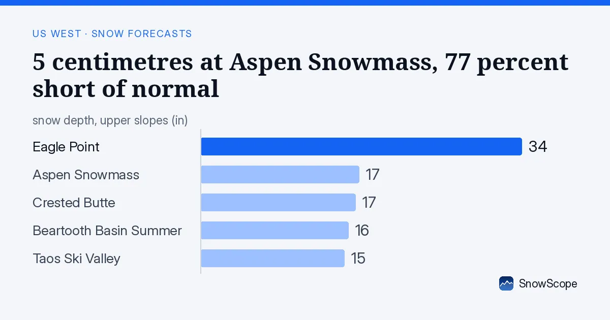
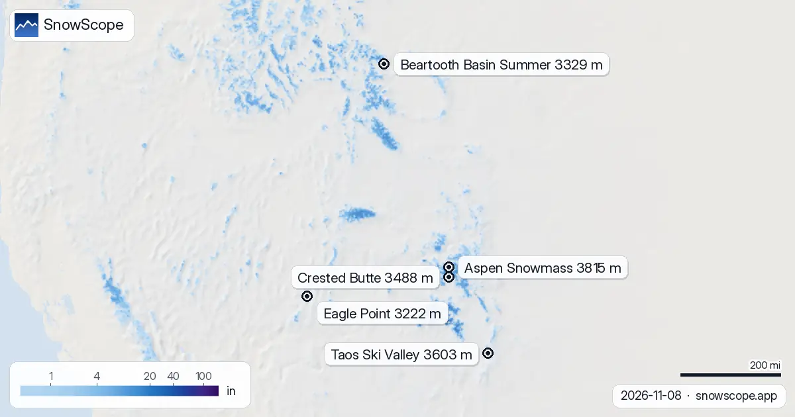
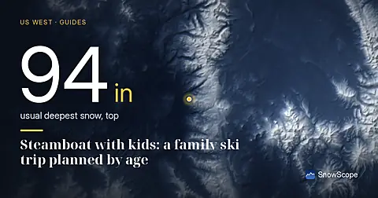

5 centimetres at Aspen Snowmass, 77 percent short of normal
Aspen Snowmass sits at just 5 centimetres on upper slopes, 23 percent of the 22 centimetres we expect by mid-November. The reason is both obvious and confirmed by satellite: freezing levels have lingered warm all week, and rain has been falling where snow should be.
See the live snow forecast for Aspen Snowmass in the SnowScope appSnow depth, powder alerts and the 3D map, free.
The deficit at Aspen Snowmass
5 centimetres is thin. For context, a week ago the depth was barely 1 centimetre, so we have seen some growth—but at this pace, the base will not thicken quickly. The regional picture tells the same story: 146 of 195 resorts in the US West have some snow, but depths are uniformly meagre. We can read this with high confidence from satellite data, and the measurement is reliable.
| Resort | Snow depth | New snow, 72 h | Coming, next days | Top |
|---|---|---|---|---|
| Aspen Snowmass | 17 in (43 cm) | 0 in (0 cm) | 0 in (0 cm) | 12,516 ft (3,815 m) |
| Taos Ski Valley | 15 in (39 cm) | 0 in (0 cm) | 0 in (0 cm) | 11,821 ft (3,603 m) |
| Crested Butte | 17 in (42 cm) | 0 in (0 cm) | 0 in (0 cm) | 11,444 ft (3,488 m) |
| Beartooth Basin Summer | 16 in (40 cm) | 0 in (0 cm) | 0 in (0 cm) | 10,922 ft (3,329 m) |
| Eagle Point | 34 in (87 cm) | 0 in (0 cm) | 0 in (0 cm) | 10,571 ft (3,222 m) |

Why it is so shallow
The 0°C level—the height where air temperature crosses freezing—has ranged between 2,600 and 4,400 metres across the entire US West region. At Aspen Snowmass, which sits at 3,815 metres on the summit, the snow line sits at 3,900 metres during the warmest afternoon hours. This means the summit is right at or just below the rain-snow boundary on warm days. When storms arrive in this configuration, they deliver rain to the mid-mountain terrain and rain partway up the peak. The same pattern shows up at Taos Ski Valley, Crested Butte and Eagle Point. It is consistent enough across the forecast that we can depend on the signal.

The exception: where snow has built
Not all mountains face the same situation. Eagle Point is an outlier, sitting at 3,222 metres elevation with 87 centimetres accumulated on the upper slopes—the deepest in the region from satellite. Beartooth Basin Summer, anchored at a base elevation of 3,163 metres, holds 40 centimetres and benefits from nights cold enough to keep the 0°C level below the summit most days. These higher, colder spots are where the warm spell has had less bite. By contrast, on the Pacific slope, Mt. Baker sits much lower and faces more moisture. Over the next few days, 105 millimetres of precipitation is forecast to arrive. However, at its base elevation of 1,540 metres, only 42 percent of that total arrives as snow; the rest is rain. The low elevation means the warmth limits snow even when moisture is plentiful.
The forecast turn
The forecast for the next four days shows a sharp shift. The 0°C level will descend from 2,600 metres down to 2,240 metres by November 11. That descent shifts the snow line down and pushes precipitation back from rain toward snow across mid-mountain slopes. This cooling trend is consistent in the model, so the confidence is high. If moisture arrives during this window, the nature of precipitation will change.
Rain on snow: a timing risk
The hazard is that precipitation is forecast to arrive on November 10 and 11, when the 0°C level is still well above mid-mountain. At Aspen Snowmass, Taos Ski Valley, Crested Butte and Eagle Point, this sets up a rain-on-snow scenario: rain falling on the thin existing snowpack rather than accumulating fresh snow. Early-season snow is thin, and rocks are probably close to the surface under it. If you go off-piste, check the official avalanche bulletin—the combination of sudden warming, then sudden cold, with wet snow on top of dry snow, is dangerous.
What we know and do not know
The story is clear: early-season snow in the US West is running below normal because warm, dry days have dominated the past week. The 23 percent depth at Aspen Snowmass reflects that deficit across the region. What we do not yet know is whether the forecast cooling will persist and whether the next storms will deliver enough water to shift the trend. We will be watching the next week closely to see if buildup accelerates once the cold arrives.
Tips for skiers
- Freezing levels above 2,600 metres mean rain on mid-mountain terrain through November 10. Ski above 3,900 metres at Aspen Snowmass to find snow rather than wet cover.
- Thin early-season base at 5 centimetres: rocks are likely under or just below the surface. Avoid steep backcountry slopes until depth increases and new snow bonds to the base.
- Rain-on-snow risk on November 10 and 11 at Aspen Snowmass, Taos Ski Valley, Crested Butte and Eagle Point. Check the official avalanche bulletin before going off-piste.
- Eagle Point holds 87 centimetres and Beartooth Basin Summer holds 40 centimetres at higher elevations. These are safer bets than lower resorts if you are looking for more stable terrain.
About these numbers
Resort snow depths are the deepest snow on the resort's upper slopes from the SnowScope snow model (about 1 km, run of 8 November); they are estimates for an area, not a measurement at one point. Station values are measurements on the date shown. Forecasts can change. Always read the official avalanche bulletin before going off-piste.
Official avalanche bulletins: avalanche.org
Cite this report
For research, teaching or the press: the numbers and charts are free to reuse under CC BY 4.0 with this citation.
SnowScope (2026), 5 centimetres at Aspen Snowmass, 77 percent short of normal, https://snowscope.app/blog/en/2026/11/us-west-freezing-level-snow-line-8-november-2026.html, accessed 2026-11-08
SnowScope (Atlas Labs). (2026, November 8). 5 centimetres at Aspen Snowmass, 77 percent short of normal. SnowScope snow reports. https://snowscope.app/blog/en/2026/11/us-west-freezing-level-snow-line-8-november-2026.html
BibTeX
@misc{snowscope2026uswestfreezinglevelsnowl,
author = {{SnowScope (Atlas Labs)}},
title = {5 centimetres at Aspen Snowmass, 77 percent short of normal},
year = {2026},
month = nov,
howpublished = {\url{https://snowscope.app/blog/en/2026/11/us-west-freezing-level-snow-line-8-november-2026.html}},
note = {Published 2026-11-09 11:38 UTC; accessed 2026-11-08}
}· CC BY 4.0 · Methods, data and tools →
Aspen Snowmass: snow and temperature by height, this winter vs last (tools) →
Follow Aspen Snowmass
Free: a message when fresh snow is coming, and the forecast every morning.
More snow reports

Vail in numbers: a usual peak of about 64 in (162 cm) at mid-mountain over 46 past winters, March the deepest month, plus terrain, access and safety.

Steamboat, Colorado, for families: what works for toddlers, school-age kids, teens and parents, with the snow of 46 past winters at three heights.

How to spend a first day at Park City Mountain, Utah, and when to go: our snow history gives about 71 in (180 cm) at the usual mid-mountain peak over 46 past winters.